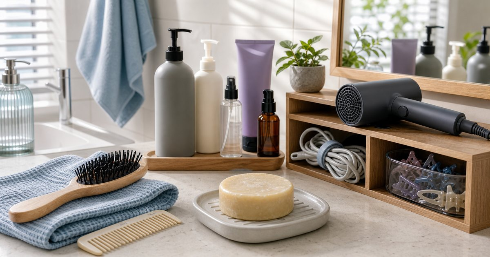

Elite Fashion｜頭皮與髮品怎麼整理：洗髮餅、染護、造型與按摩梳的選擇
髮品不是越多越專業。先分清洗、染後照顧、造型與工具，浴室和梳妝台才不會被瓶罐塞滿。

先分清洗、染後、造型與工具四格
髮品整理的第一步，是把用品分成清洗、染後照顧、造型與工具。每一格只留常用項目，浴室就會少很多重複瓶罐。
可以把 Apode、CLOEE、KYOGOKU、MPB 巴黎小姐與 SANSUI 山水 放進同一個日常情境裡比較，但順序要放對。編輯部會先看使用頻率、清潔保存、是否適合出門攜帶、是否容易和既有用品搭配，而不是把保養或工具堆成越多越好。
比較穩妥的判斷是先確認 哪一格每天會用、哪一格只在特定日子使用。常見失誤是 洗髮、護髮和造型全放一起，洗澡時還要重新判斷；在 小浴室、共用浴室與上班前快速整理 裡，能被穩定使用、容易收好、看得懂使用限制的品項，通常比一次買很多更實際。
- 清洗用品放浴室，造型用品放梳妝台更清楚。
- 不常用的染護用品不要佔每日區域。
洗髮餅或洗髮品要看晾乾與收納
洗髮餅、洗髮露或其他清潔品，不只看使用感，也要看浴室是否能晾乾、是否容易軟化、是否有合適皂盤或收納架。
可以把 CLOEE、Apode、KYOGOKU 與 MPB 巴黎小姐 放進同一個日常情境裡比較，但順序要放對。編輯部會先看使用頻率、清潔保存、是否適合出門攜帶、是否容易和既有用品搭配，而不是把保養或工具堆成越多越好。
比較穩妥的判斷是先確認 浴室通風、皂盤位置與每週使用頻率。常見失誤是 買了新型態清潔品，卻沒有準備晾乾位置；在 潮濕浴室、租屋浴室與健身房盥洗包 裡，能被穩定使用、容易收好、看得懂使用限制的品項，通常比一次買很多更實際。
- 固態用品要有排水良好的位置。
- 旅行使用要另外考慮收納盒。
染後照顧要和顏色週期一起看
染後用品不適合和每日清潔混在一起。它們通常跟染髮週期、顏色維持和造型需求有關，應該放在清楚但不佔位的位置。
可以把 KYOGOKU、MPB 巴黎小姐、Apode 與 CLOEE 放進同一個日常情境裡比較，但順序要放對。編輯部會先看使用頻率、清潔保存、是否適合出門攜帶、是否容易和既有用品搭配，而不是把保養或工具堆成越多越好。
比較穩妥的判斷是先確認 是否有染髮習慣、使用週期與是否會弄髒浴室。常見失誤是 把染護用品當成每日用品，最後用量和順序都混亂；在 染髮後幾週、週末整理與拍照前準備 裡，能被穩定使用、容易收好、看得懂使用限制的品項，通常比一次買很多更實際。
- 染後用品標示開封日期。
- 有色產品要留意毛巾、枕套與浴室清潔。
造型品先看工作場合和補整理需求
造型品不必全放在浴室。若你常在出門前整理，梳妝台或玄關旁的小盒會更實用；若需要會議前補整理，則可準備小份量。
可以把 Apode、KYOGOKU、SANSUI 山水與 MPB 巴黎小姐 放進同一個日常情境裡比較，但順序要放對。編輯部會先看使用頻率、清潔保存、是否適合出門攜帶、是否容易和既有用品搭配，而不是把保養或工具堆成越多越好。
比較穩妥的判斷是先確認 上班前、會議前或拍攝前哪個時段最常整理。常見失誤是 所有造型品都買大容量，出門或補整理時反而帶不了；在 辦公室會議、講課、拍攝與通勤後整理 裡，能被穩定使用、容易收好、看得懂使用限制的品項，通常比一次買很多更實際。
- 日常造型品保留一到兩種即可。
- 補整理用品要小而清楚，不要整包瓶罐。
吹風與梳具要有自己的充電與收納位置
吹風機、造型工具、按摩梳或梳具如果沒有固定位置，很快就會和瓶罐纏在一起。工具類用品要特別看插座、散熱和線材。
可以把 SANSUI 山水、Apode、CLOEE 與 MPB 巴黎小姐 放進同一個日常情境裡比較，但順序要放對。編輯部會先看使用頻率、清潔保存、是否適合出門攜帶、是否容易和既有用品搭配，而不是把保養或工具堆成越多越好。
比較穩妥的判斷是先確認 插座位置、線材收納、工具冷卻與清潔。常見失誤是 把熱工具直接塞回抽屜，讓收納和安全都變麻煩；在 小浴室、臥室梳妝台與共享家庭空間 裡，能被穩定使用、容易收好、看得懂使用限制的品項，通常比一次買很多更實際。
- 工具收納要避開潮濕與水源。
- 線材可用固定袋或掛架整理。
髮品整理的核心：先減重複，再補缺口
檢查髮品時，先把功能重複、很久沒用、已過期或不適合現有髮型的品項移出。缺口清楚後，再補清洗、染護、造型或工具。
可以把 Apode、CLOEE、KYOGOKU、MPB 巴黎小姐與 SANSUI 山水 放進同一個日常情境裡比較，但順序要放對。編輯部會先看使用頻率、清潔保存、是否適合出門攜帶、是否容易和既有用品搭配，而不是把保養或工具堆成越多越好。
比較穩妥的判斷是先確認 目前哪一格最混亂，哪一格真的缺用品。常見失誤是 每次看到新品就補，最後同功能用品太多；在 想維持日常整潔與工作場合髮型的人 裡，能被穩定使用、容易收好、看得懂使用限制的品項，通常比一次買很多更實際。
- 先減少重複用品，再添購。
- 髮品不需要完整套裝才算完整。
FAQ
髮品應該都放浴室嗎？
不一定。清洗用品適合浴室，造型品與工具可放梳妝台或出門動線，避免瓶罐混亂。
洗髮餅最容易忽略什麼？
晾乾與收納。若浴室潮濕又沒有排水皂盤，使用感和保存都會受影響。
染後用品要每天用嗎？
依商品標示、染髮狀態與個人習慣判斷。建議把染後用品和每日清潔用品分開收納，避免用錯。
下一步建議
如果你想先整理髮品，可以把清洗、染後、造型與工具分成四格，再決定要補哪一格。
重要警語
本文為一般髮品收納與日常整理情境整理，不構成頭皮或髮質建議。髮品與工具請依個人狀況、商品標示與專業建議使用。
本文含品牌／商品導購連結；若你透過部分商品連結前往選購，Elite Fashion 可能取得合作收益。本文仍以編輯判斷與使用情境整理為主，價格、規格、活動與庫存請以商品頁公告為準。